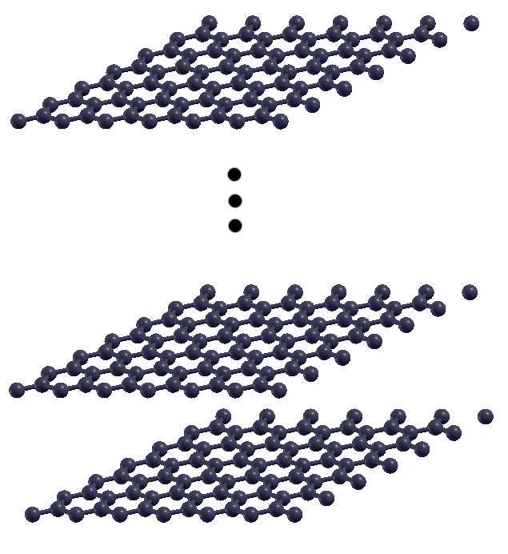
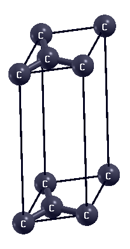
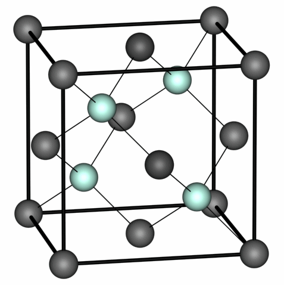

ASESMA 2023: Hands-on session -- Day-2
Alberto Carta, Iurii Timrov, and others
June 2023
Topics of the session:
1. The basics: benzene and graphene
- Single molecule calculations: benzene
- Basics of post-processing: plotting wavefunctions
- Periodic systems: graphene
2. DFT bread and butter: convergence tests and lattice optimization
- Basic convergence tests on fcc Si: energy cutoff and k-grid
- Optimizing the lattice constant:
- Extracting physical information: bulk modulus
To get the latest version of the exercises, in the ASESMA 2023 folder execute: `git pull`
About Quantum ESPRESSO
More info about Quantum ESPRESSO can be found in:
- https://www.quantum-espresso.org/
- Quantum ESPRESSO (QE) documentation:
- on-line manuals (pw.x code) and (pp.x code) for input file description
- Useful resources:
- Input generator from materials cloud
- Pseudopotentials SSSP library and GBRV library
Exercise 1: Benzene
How to calculate and plot molecular orbitals of benzene
(actually \(sign(\psi(r))\cdot|\psi(r)|^2\) )
Step 0:
View the Benzene Molecule
xcrysden --pwi pw.benzene.scf.inMove the mouse around to take a look at the molecule.
The ".pwi" format stands for quantum espresso pw.x input file. For a pw.x output file, that would be ".pwo".
Step 1:
Perform the SCF Calculation
pw.x -in pw.benzene.scf.in \
> pw.benzene.scf.outThe pw.x code will now perform a DFT self-consistent field (SCF) calculation.

Step 2:
Postprocess the wavefunction data
pp.x -in pp.benzene.psi2.in > pp.benzene.psi2.outThe resulting wavefunction amplitudes \(sign(\psi(r))\cdot|\psi(r)|^2\) are written to files psi2.benzene_K001_B0*.xsf
Step 3:
Plot a single molecular orbital
xcrysden --xsf psi2.benzene_K001_B006.xsfMake a fancy display of the molecular orbital (follow the instructions of the tutor). The README.md contains the info necessary to save the current state view. You can try and save that as MO-state.xcrysden and then use the same view with another orbital:
xcrysden --xsf psi2.benzene_K001_B005.xsf --script MO-state.xcrysdenStep 4:
Plot All Molecular Orbitals
Run in the terminal:
bash plot-psi2.sh 
Exercise 2: Graphene
Introduction to periodic systems
Graphene is a single sheet of carbon atoms
Periodic boundary conditions are applied in the plane

But in quantum espresso every direction is periodic
Computing the electronic structure of graphene
We can describe the graphene sheet with just 2 atoms in the unit cell
Step 1:Perform the SCF Calculation
pw.x -in pw.graphene.scf.in \
> pw.graphene.scf.outStep 2: Make a DOS Plot
pw.x -in pw.graphene.nscf.in \
> pw.graphene.nscf.outStep 3: Calculate DOS Datafile
dos.x -in dos.graphene.in \
> dos.graphene.outThe resulting DOS datafile is written to graphene.dos
Step 4: Plot the DOS with Gnuplot
gnuplot dos.gpStep 5: Perform Bands Calculation
pw.x -in pw.graphene.bands.in > pw.graphene.bands.outStep 6: Generate Datafile for Plotting
bands.x -in bands.graphene.in > bands.graphene.outThe resulting datafile for plotting is written to graphene.bands.dat.gnu
Step 7: Plot the bandstructure with Gnuplot
gnuplot spaghetti.gpStep 8: Find and Edit Fermi Energy in Gnuplot Files
grep Fermi pw.graphene.nscf.outUse the Fermi energy value from the output and edit dos.gp and spaghetti.gp files accordingly.
Step 9: Replot the DOS and bandstructure
gnuplot dos.gpgnuplot spaghetti.gpExercise 3: Silicon
Bread and butter of real DFT calculations
Crystal Structure Definition
bulk silicon is a face-centered cubic (FCC) lattice with 2 atoms in the unit cell at positions [0 0 0] and [1/4 1/4 1/4] (this is also called diamond or zinc-blend structure)

&CONTROL
calculation='scf',
prefix='silicon',
pseudo_dir='../../pseudo/',
outdir='./tmp'
/
&SYSTEM
ibrav = 2,
celldm(1) = 10.2,
nat = 2,
ntyp = 1,
ecutwfc = 28,
/
&ELECTRONS
/
ATOMIC_SPECIES
Si 28.086 Si.pz-vbc.UPF
ATOMIC_POSITIONS
Si 0.00 0.00 0.00
Si 0.25 0.25 0.25
K_POINTS automatic
4 4 4 1 1 1
Crystal Structure Definition
- `ibrav=2`: meaning fcc lattice
- Just one: `celldm(1)=10.2`, lattice parameter a in Bohr
- `nat=2`: two atoms
- `ntyp=1`: one distinct atomic specie
- Where are the atoms located in the unit cell? See card ATOMIC POSITIONS: here, in Cartesian axes, in units of a
&CONTROL
calculation='scf',
prefix='silicon',
pseudo_dir='../../pseudo/',
outdir='./tmp'
/
&SYSTEM
ibrav = 2,
celldm(1) = 10.2,
nat = 2,
ntyp = 1,
ecutwfc = 28,
/
&ELECTRONS
/
ATOMIC_SPECIES
Si 28.086 Si.pz-vbc.UPF
ATOMIC_POSITIONS
Si 0.00 0.00 0.00
Si 0.25 0.25 0.25
K_POINTS automatic
4 4 4 1 1 1
Logic of the examples:
Convergence tests for Si bulk consist of the following steps:
- Converge the basis-set
- Converge the k-points
- With converged basis-set and k-points, calculate the lattice parameter of FCC bulk Si
- With converged basis-set, k-points, and lattice parameter, fit the bulk modulus of FCC Si
Description of folder structure:
- ex1.ecutwfc/ - Convergence tests for cutoff energy
- ex2.kpoints/ - Convergence tests for k-points
- ex3.alat/ - Search of lattice parameter of Si bulk (alat = a lattice parameter)
Kinetic Energy Cutoff (ecutwfc)
The kinetic energy cutoff ecutwfc (in Ry) determines the size of the Plane-Wave (PW) basis set used to expand wave-functions (i.e. Kohn-Sham orbitals). The default value for the charge density is ecutrho=4*ecutwfc, which is suitable for norm-conserving pseudopotentials.
A manual test of convergence with respect to the kinetic energy cutoff involves the following tasks (Note: We will not perform this manually!):
- Change the value of ecutwfc in the pw.si.scf.in input file to different values such as 16, 20, 24, 28, 32 Ry.
- For each value of ecutwfc, run pw.x and record the final total energy.
- Store the data in a file, let's say si.etot_vs_ecut (each line should contain two values: ecutwfc and total energy).
-
Plot the energies collected in si.etot vs ecut using your preferred plotting program.
Gnuplot:
Python:plot "si.etot_vs_ecut" w lppython3 plot_etot_ecut.py
Kinetic Energy Cutoff (ecutwfc)
In the end, we want to have something of the type:
12.0000 -15.80731200
16.0000 -15.83916740
20.0000 -15.84754590
24.0000 -15.85081789
28.0000 -15.85188267
32.0000 -15.85244512
36.0000 -15.85280759
We are looking for differences of < mRy
Note:
The energy per-se is meaningless, only energy differences are meaningful!
Convergence with Respect to K-Points
A sufficiently dense grid of k-points is required to accurately represent the periodicity of the system. To test the convergence with respect to k-points, you can modify the K_POINTS card in your input file. Request automatic Monkhorst-Pack grids using the following format:
K_POINTS automatic
nk1 nk2 nk3 k1 k2 k3
Gradually increase the values of nk1, nk2, and nk3 while keeping k1, k2, and k3 equal to 1. For example, you can try increasing nk1 = nk2 = nk3 to 2, 4, 6, 8, and so on. Run the pw.x calculation for each set of k-point values.
Note:
- The first three nk1 nk2 nk3 numbers indicate the number of grid points along crystal axes 1, 2, 3.
- The second three k1 k2 k3 numbers, either 0 or 1, indicate whether the grid starts from 0 or is displaced by half a step along crystal axes 1, 2, 3.
- Convergence is not necessarily monotonic, as there is no variational principle with respect to the number of k-points. Why do you think this is the case? Try to repeat the example with odd values of nk.
Lattice Parameter Determination
In silicon (Si), the equilibrium state is determined solely by the minimum-energy lattice parameter. Due to symmetry, there are no forces on the atoms. You can verify this by setting tprnfor=.true. in the namelist &CONTROL and checking for the forces reprinted at the end of the calculation.
To determine the lattice parameter of bulk Si, you can follow these steps:
- Choose suitable values for ecutwfc (e.g., 36 Ry) and the k-point grid (e.g., 6 6 6 1 1 1).
- Run pw.x for values of celldm(1) ranging from 9.7 to 10.8 Bohr in steps of 0.1 Bohr

Extracting physical parameters: the Bulk modulus
The bulk modulus is defined as:
\[ B = -V \left( \frac{{dP}}{{dV}} \right) \]The Murnaghan equation of state assumes that the bulk modulus (B) is proportional to the pressure (P).
\[ B = B_0 + \frac{{B_0'}}{{B_0}} \cdot P \] \[\begin{aligned} E(V) & = E_0 + \bigg[ \frac{1}{B_0'(B_0'-1) } \bigg( \frac{V}{V_0} \bigg)^{1-B_0'} + \\ & + \frac{1}{B_0'}\frac{V}{V_0} - \frac{1}{B_0'-1}\bigg] \\ \end{aligned} \]